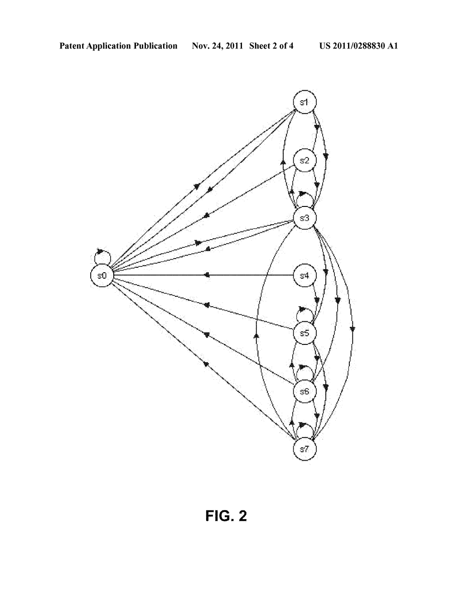

On stateful dialogs
Thanks Mario for you answer!
Your e-commerce example remind me something I didn’t clarify in my original article:
Service-oriented bots vs Turing test-oriented bots
When developing ((dialogs)) project, thinking about how to model a domain-specific dialog with as a precise finite-state machine, I was referring on chatbots for business-oriented conversations, where a conversation possibly bring to a transaction (e.g. just a shopping order submission).
In these (interesting use cases ;-) ) a business goal conversation maybe have to drive customer/user to follow a sort of workflow/behaviour patterns where conversation move in a path of states (modeled as a FSM, where events are commands/semantic understanding, etc.).
In ((dialogs)) project, I mentioned as example the classic workflow of an online shopping order: customer have to:
- fulfill a cart list of items to be purcheased (= specific sub-dialog),
- specify a delivery address (= a specific sub-dialog),
- a delivery time (= a specific sub-dialog)
- and just after having completed all these actions, the customer can eventually submit the order to supplier (the goal “transaction”).
The precisation is to ditinguish a conversation that have the scope to achive an “action” (in facts someone talk about actionable data bots and someone else talk about planning rules or slot-filling scenarios), from a general chitchat conversation without any specific trans-action to complete! I’m by example referring here to chatbots developed for Loebner prize competition, where chatbots have to “just” conversate imitating an human-to-human small talk about everthing… without a real final goal: just mimic a human conversation (the Turing test contexts).
So, generally speaking, any bots built to deliver specific services or domain specific info, or (above all) learn about the user needs or intents, must follow some sort of status workflow and have to be modeled as a state machine in a general sense. Nevertheless, the criticism I done to my approach in my own ((dialogs)) project, is that maybe that is not a good idea to hard-code the state machine strictly along with the programming code of the bot conversation.
Orbits of states
Back to your approach you mentioned, let me quoting you:
The programmer defines various initial states, each can be triggered by a different set of sentences (eventually with a semantic engine)
Thanks to buttons or semantic analysis, the users jumps from one state to the other («Do you want A or B?», choose between A and B…)
Yes, I feel that the defining a status-path (to achieve a “goal”), where the status is an attribute of the user session, defining the user intent, a step in a workflow in an interesting idea to deep in. I have to think more about it; is now not clear to me how to generalize a definition of that status (open point for me).
We track the «orbits» of each user. For instance we have a book store, and we see that people who buy more than 3 books always pay by credit card, so do not offer the choice of paying by bank transfer (silly example, but Ok).
The idea is that instead of having a complex seq2seq we consider the orbits inside a limited amount of states.
Yes, I see the point. Maybe you are referring about the fact that to move from state Snow to state Snext, the user have a short list of possible final states ( S in S1…Sn).
This is possibly a desired feature for a “business-oriented” chatbots, where in facts user can’t have to conversate about “anything”, but instead the user have to conversate with chatbot in specific domain topics (in a customer to customer service chatbot of a telco operator, the use maybe have to talk about issues related to his tariff plan, etc. and not about the weather or football match results or brexit).
BTW, with an extreme simplification (I admit), the orbit could be just old fashioned preferences & profiling, always claimed to be done (in web sites/services) but rarerly done in practice ;-)

BTW, Special thanks:
I’m happy to having meet you at #convcomp2016, Mario !
Thanks for your willingness with peple in conference !
giorgio, 18th July, updated 19th July
Originally published on Medium.